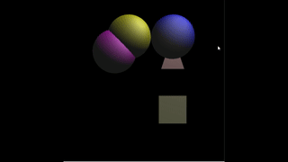
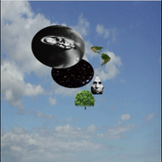

Find me on:
UPDATES (9/9): I am currently working on a multiplayer FPS fireteam game called Task Force AI.
Here is some progress:
UPDATES (1/7/18): A friend and I have updated the AI, networking, mission system, and added a lot of HUD stuff. There's still a lot of work to be done,
but check out the test mission here:
Here are some of my finished projects. Please enjoy them.
| Game | Link |
|---|---|
| (NEW 1/7/18!) (Undisclosed Name) FPS Game Demo | Click |
| (NEW 12/24/17!) Missile Command | Click |
| Space Jam | Click |
| Unseen | Click |
| Bum Rush | Click |
| Greenlight | Click |
| Biohazard Alert | Click |
| Something Came in the Mail | Click |
| Captivity | Click |
| Nightmare (tutorial provided by Unity) | Click |
| Camo | Click |
| Space Shooter (tutorial provided by Unity) | Click |
| Roll-a-ball (tutorial provided by Unity) | Click |
| Snake | Click |
| Client/Server Platformer | Click |
| Client/Server Pong | Click |
| Java Projects | Link | Description |
|---|---|---|
| Poker Game | Click | Uses basic object orientation to make a GUI based poker game. |
| Predator Prey Model | Click | Implements basic array structures to predict predator-prey relationships. |
| Bug Tracker | Click | Tracks software bugs using a custom implementation of a List data structure. |
| Virtual Movie Rental System | Click | Uses queues and ArrayLists to create a user friendly movie rental system similar to Netflix. |
| Text File Compressor | Click | Uses overriden ArrayList and LinkedList data structures to create a file compressor similar to WinRAR. |
| Family Tree Manager | Click | Implements a recursive algorithm to create a family tree using a tree data structure. |
| Minimum Bridge Manager | Click | Uses Kruskal's algorithm, up trees, heaps, and adjacency list to find a minimum spanning tree. |
| Spell Checker | Click | Uses hash tables and a polynomial hashing algorithm to implement a spell checker for text files. |
| C Projects | Link | Description |
|---|---|---|
| .ppm Modifier/String Color Manipulation | Click | Gained experience using preprocessor defined constants and printf formatting. |
| Wordsearch Game | Click | Practices using stack-based arrays to implement a word search game. |
| CLI Spell Checker | Click | Uses dynamic memory allocation to scan each line in a text file to check for misspellings. |
| DES Encryption | Click | Gained experience working in hexadecimal by implementing the des encryption algorithm from scratch. |
| Custom grep Implementation | Click | Practiced using struct based object orientation and recursion to create a custom implementation of the Linux grep command. |
| Source Code for Snake, Pong, and Client/Server Platformer | Link | Description |
|---|---|---|
| Homework 1 | Click | Here I created a simple network on localhost that sent messages between each other (similar to a chatroom). |
| Homework 2 | Click | Here I created a game object representation system using the generic component model and I created a basic platformer using networking capabilities on localhost. |
| Homework 3 | Click | Here I created an event management system, a game timeline representation, and a replay system for the platformer. |
| Homework 4 | Click | Here I used scripting and my other game engine components to create pong and snake. |
| Graphics Projects | Link | Description | Preview |
|---|---|---|---|
| WebGL Objects, Cameras, and Illumination/Lighting | Click | Implemented Blinn-Phong illumination, 3D camera controls, and object controls for 3D ellipsoids in WebGL. Controls: b - Switch lighting modes, wasd - Move camera left/right/forward/back, WASD - rotate camera, Up/Down/L/R Arrow keys - Switch model selection, P,O,K,L,J,; - Move/ rotate model selection. To run, open the index.html file in Chrome web browser. |  |
| WebGL Texture Modeling, Transparency, and Depth Sorting | Click | Implemented transparency, texture rendering, and a depth sorting algorithm for my ellipsoids and triangles. Controls: b - Switch lighting modes, wasd - Move camera left/right/forward/back, WASD - rotate camera, Up/Down/L/R Arrow keys - Switch model selection, P,O,K,L,J,; - Move/ rotate model selection. To run, open the index.html file in Chrome web browser. |  |
| AI Projects/Experiments | Link | Description |
|---|---|---|
| Steering and Flocking | Click | Here I created 2D kinematic steering(physics) behavior from scratch. I implemented arrive, wander, and flocking. |
| Djikstra, A-Star, Pathfollowing | Click | Here I implemented Djikstra's algorithm and A-Star algorithm to create a pathfinding system for AI. |
| Behavior Trees, Decision Trees, Learned Decision Trees | Click | Here I created decision-making AI using decision trees, behavior trees, and learned decision trees. |
| Web Development Projects | Link | Description |
|---|---|---|
| iTrust v22 | Click | This was a team project for Software Engineering class. We implemented 8 new use cases and refactored a logging mechanism for the iTrust website. Instructions to deploy iTrust on your machine can be found at http://agile.csc.ncsu.edu/iTrust/wiki/doku.php?id=home_deployment_instructions. The wiki page for this project is http://agile.csc.ncsu.edu/iTrust/wiki/doku.php?id=start. All source code and documents can be found in the zip file. |
| BurgerShot v1 (Screenshots) | GitHub Link | A simulation for an online ordering form for a fictional burger joint called BurgerShot. Uses MySQL and JSF to create a web application that allows users to order food online with account systems and administrator systems. |
Click here to view my completed 3d modeling meshes created using Blender.


Powered by Unreal Engine, Unity Engine, GameMaker Studios, Blender, Processing, WebGL, and Three.js